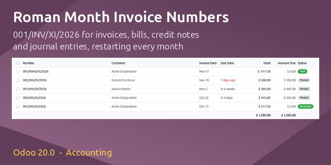
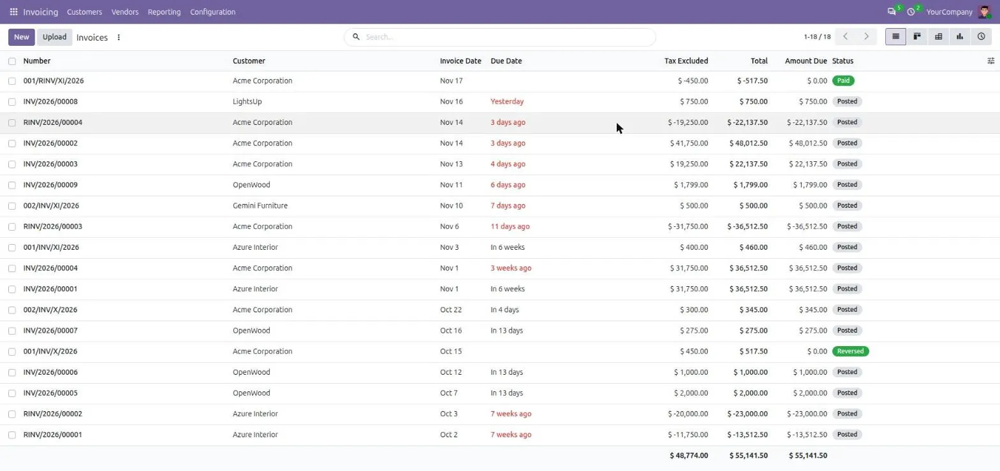
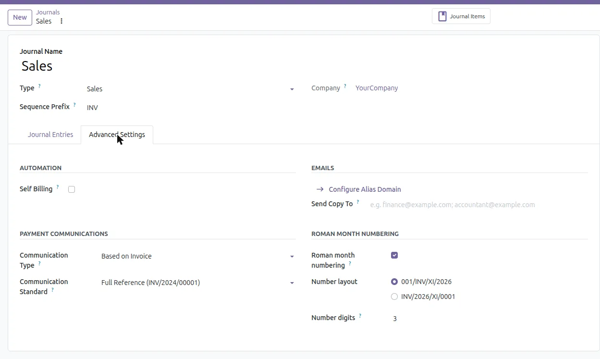
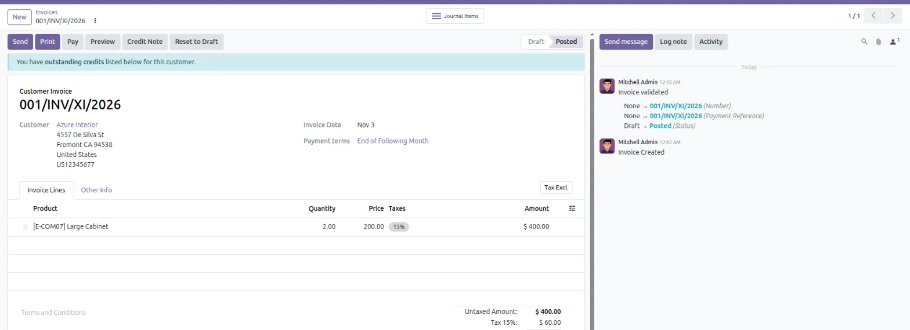
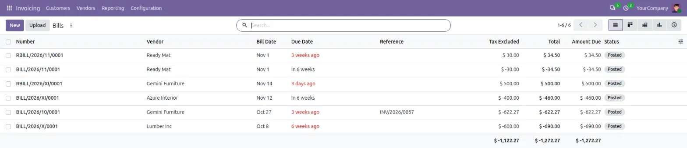

Invoice Numbering with Roman Month - 001/INV/XI/2026
Invoice numbering and invoice sequence with a Roman numeral month, like 001/INV/XI/2026, for invoices, bills, credit notes and entries, restarting monthly.
- Price
- $9.99
- Odoo versions
- 16.0
- 17.0
- 18.0
- 19.0
- 20.0
- Technical name
tamadoo_sequence_roman_month_account- License
- OPL-1
Odoo 20.0: not listed on the store yet. Ask at tama.odoo@gmail.com.

Text and screenshots below are from the Odoo 20.0 version of this module.
Number invoices, vendor bills, credit notes and journal entries the Indonesian way, like 001/INV/XI/2026: the month of the accounting date as a Roman numeral, a counter that restarts every month, one option per journal.
I, II, III ... XII in your accounting numbers


What you get
Roman month
I to XII from the accounting date: 001/INV/X/2026 in October, 001/INV/XI/2026 in November.
Restarts every month
The counter starts again at 001 on the first entry of each month, separately for every journal.
Own counter for credit notes
With Dedicated Credit Note Sequence, credit notes run as 001/RINV/XI/2026 and refunds as 001/RBILL/XI/2026.
Two layouts
001/INV/XI/2026 (number first) or INV/2026/XI/0001 (number last), and the number of digits you want.
Odoo's own engine
Gap-free and safe when several users post at the same time: the standard numbering, locking and date checks do the work.
Your history is kept
Entries that already have a number keep it. Switch the option on or off at any time: the next posted entry follows it.
Any journal
Sales, purchase, miscellaneous, bank and cash journals: bank statement lines and payments are numbered the same way.
No setup screens
Three fields on the journal, nothing else. Depends on Accounting and Tamadoo Sequence Roman Month.
Which documents?
| ✅ Customer invoices | 001/INV/XI/2026 |
| ✅ Customer credit notes | 001/RINV/XI/2026 with Dedicated Credit Note Sequence, otherwise they share the invoice counter |
| ✅ Vendor bills and refunds | 001/BILL/XI/2026, 001/RBILL/XI/2026 |
| ✅ Miscellaneous journal entries | 001/MISC/XI/2026 |
| ✅ Bank and cash journals | statement lines 001/BNK1/XI/2026, payments with a journal entry 001/PBNK1/XI/2026 (with Dedicated Payment Sequence) |
| ✅ Any other journal | entries created by other apps in a journal with the option on (Point of Sale, inventory valuation...) |
❌ Not covered
- Entries that already have a number keep it: nothing is renumbered when you install the module or switch the option.
- Payments that do not create a journal entry (no outstanding account on the payment method) are numbered by the Payments sequence: put
%(roman_month)sof Tamadoo Sequence Roman Month in that sequence. - Sales orders, purchase orders and transfers are numbered by sequences: use Tamadoo Sequence Roman Month.
- The year is the calendar year of the accounting date, not a fiscal year range like 2025-26.
- The technical Sequence Override Regex of a journal (developer mode) must stay empty on a journal with Roman month numbering; otherwise Odoo clears it when an accountant posts, and refuses posting for other users.
- Self-billing journals: like the standard numbering, the partner number is added to the code (001/BILL00042/XI/2026), one counter per partner.
How it works
- The number is given when the entry is posted, as in standard Odoo. A draft shows the number it would get only when it would be the first of its month.
- Code: the journal's short code (INV, BILL, MISC, BNK1), with R in front for credit notes and refunds and P for payments when the journal has a dedicated sequence for them. Month and year: the accounting date.
- One counter per journal, code and month. The first entry of a month gets 1.
- Changing the date of a draft that was never posted renumbers it into the new month. An entry that was posted once keeps its number; to move it to another month, clear the number first (standard Odoo rule).
- Odoo's date check applies: a Roman month that does not match the accounting date is refused.
- Switching the option off: the standard numbering continues from the last standard number of the journal and ignores the Roman ones. Switching it on again continues the Roman counter of the month.
- A new layout or journal code starts a new counter at 1 for the month. A new number of digits applies to the next month (the current month keeps the width of its first number).
- The Resequence action (developer mode, journal entries list) works with Roman numbers: each month is numbered with its own Roman month.
Step by step
Switch it on per journal
Accounting > Configuration > Journals > Sales > Advanced Settings: tick Roman month numbering, choose the layout and the number of digits. Do the same for Purchases, Miscellaneous Operations or any other journal.

Customer invoices and credit notes
Invoices posted in October and November next to the numbers given before the option was switched on: 001/INV/X/2026, 002/INV/X/2026, 001/INV/XI/2026... The credit note runs as 001/RINV/XI/2026.

The invoice
The number is given on Confirm and is also used as the payment reference.

Vendor bills
The Purchases journal with the second layout and 4 digits: BILL/2026/X/0001, BILL/2026/XI/0001 and the refund RBILL/2026/XI/0001, next to older standard numbers.

Set up in 2 minutes
- Install the module (it also installs Tamadoo Sequence Roman Month).
- Open Accounting > Configuration > Journals (Invoicing > Configuration > Journals) and open a journal, e.g. Sales.
- On the Advanced Settings tab, tick Roman month numbering.
- Choose the Number layout (001/INV/XI/2026 or INV/2026/XI/0001) and the Number digits (3 gives 001).
- Save, and repeat for Purchases, Miscellaneous Operations or any other journal. The next posted entry gets 001/INV/XI/2026.
Get Invoice Numbering with Roman Month
Odoo 20.0: not listed on the store yet. Ask at tama.odoo@gmail.com.
Questions before buying? Write to tama.odoo@gmail.com.